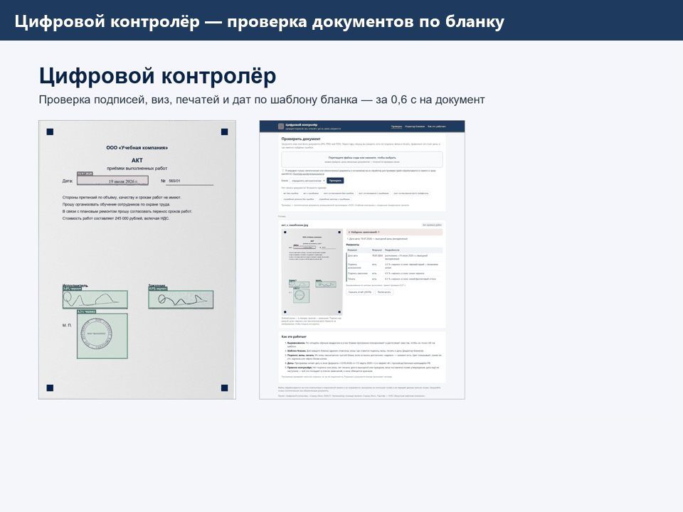
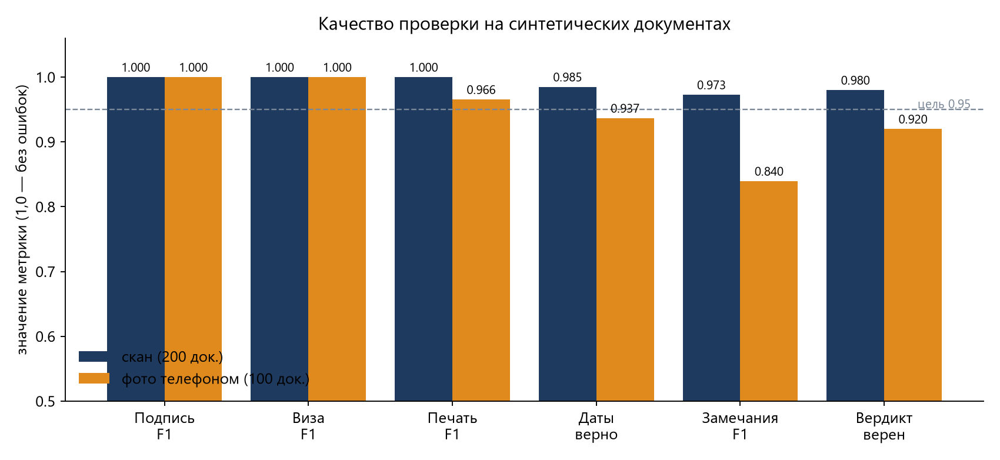
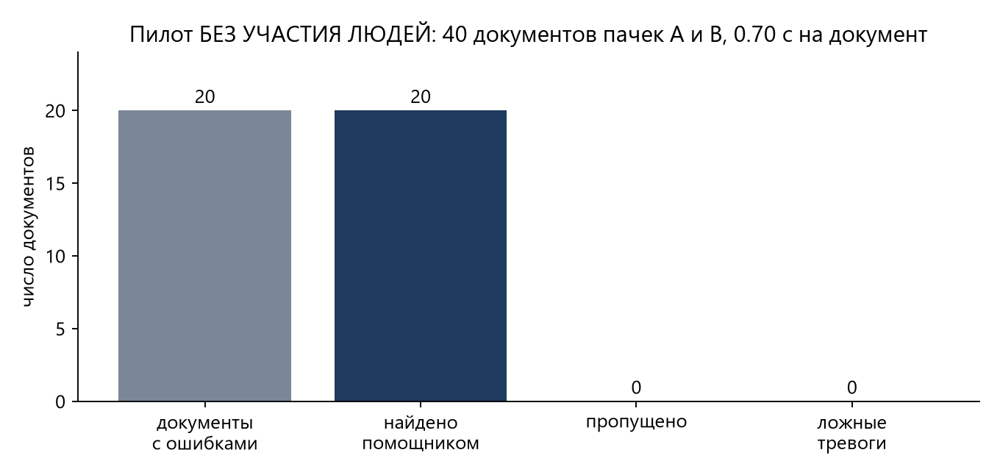
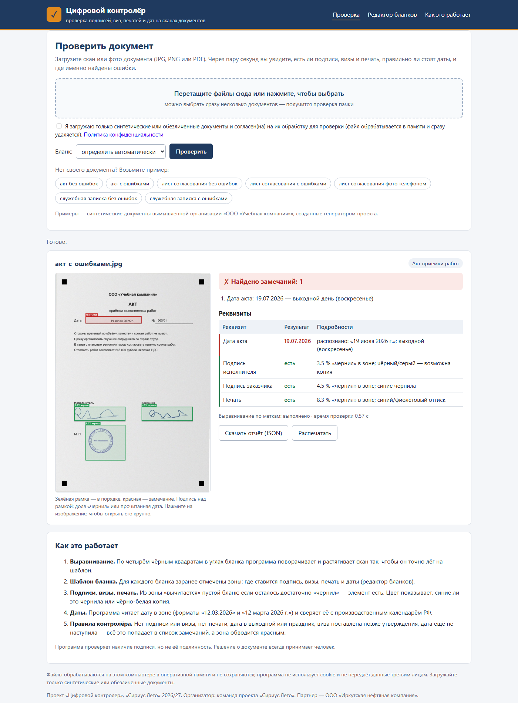

Проблема
В актах и других бланках ошибки типовые: нет подписи, визы или печати, дата стоит в выходной или праздник, нарушен порядок дат согласования, дата ушла в будущее. Проверять это вручную по каждому документу долго, а на длинной пачке внимание притупляется.
«Цифровой контролёр» размечает бланк один раз и дальше проверяет документы автоматически: показывает лист с рамками найденных элементов и список замечаний.
Как работает контролёр

▶ Показать анимацию (GIF, 572 КБ)- Выравнивание по четырём чёрным меткам в углах листа.
- Зоны бланка: где стоят подпись, визы, печать и даты (размечаются один раз).
- Подпись, виза, печать: из зоны вычитается пустой бланк и считается доля «чернил»; печать — по синему цвету.
- Даты: чтение печатной даты, проверка выходных и праздников РФ, порядка дат и даты в будущем.
- Ответ: картинка с рамками и список замечаний — на веб-странице или в Telegram-боте.
Эксперимент
Онлайн-форма для добровольцев: 20 документов пачки A или B. Для каждого документа нужно отметить «ошибка есть» или «ошибок нет», затем заполнить опрос NASA-TLX и скачать два CSV — с ответами, а также с временем и оценками нагрузки.
Ответы не отправляются на сервер — файлы вы передаёте организатору сами. Прогресс сохраняется в браузере: можно закрыть вкладку и вернуться к тому же документу.
Результаты (на синтетических документах)
200 документов: подпись, виза и печать найдены без ошибок (Precision = Recall = 1,00), даты прочитаны верно в 98,5 % случаев, около 0,6 с на документ на обычном ноутбуке.




Все документы синтетические (вымышленная организация). Эксперимент с людьми ещё не проведён; пилот выполнен без участия людей. Подлинность подписи не проверяется.
Скриншоты



Стек
- Проверка документов
- Python: веб-интерфейс и Telegram-бот работают на компьютере команды.
- Сайт
- Статические HTML, CSS и JavaScript без сборки и сторонних скриптов — открывается на GitHub Pages.
- Отчёты помощника
- PDF с результатами проверки — по одному на пачку A и B эксперимента.
- Данные
- Синтетические документы вымышленной организации; ответы эксперимента не отправляются на сервер.
Запуск проверки
Эта страница — витрина проекта. Сама проверка работает на Python на компьютере команды: через веб-интерфейс или Telegram-бота. Поэтому здесь нельзя загрузить свой документ — проверка запускается в среде команды.